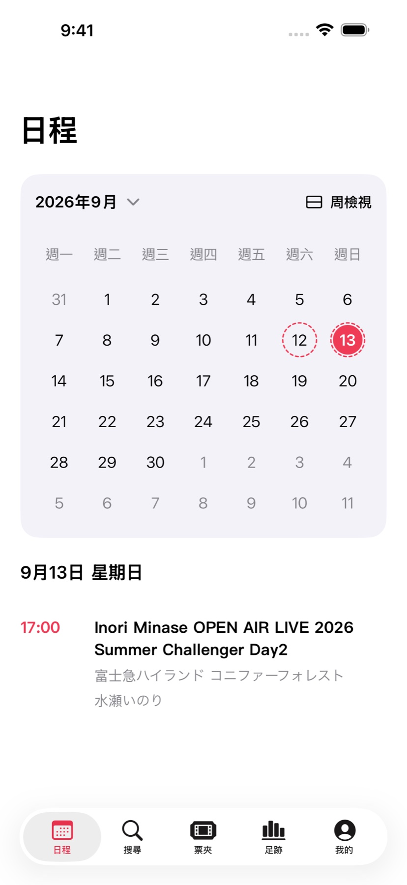
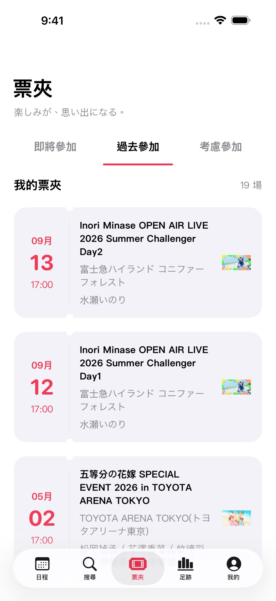
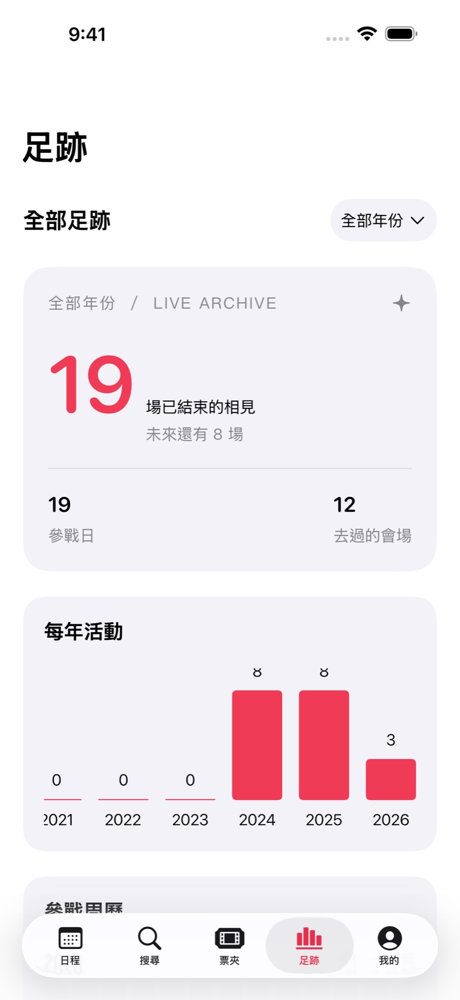

讓日曆裡，
多一些期待。
月曆與週曆自由切換，有演出的日子清楚標記。選取日期，當天的演出就在月曆下方，出發前一眼就能找到。
月曆與週曆 / 每日演出安排
下一場演出的期待，和散場後不捨的餘韻。用まち整理行程、收好參加紀錄，把屬於自己的現場留在身邊。
完全免費 · 無 App 內購買 · 無訂閱 / iPhone 與 iPad / iOS 17 以上版本

有期待的日子，一眼看見。
實際 App 畫面，參加狀態為示範紀錄。
月曆與週曆自由切換，有演出的日子清楚標記。選取日期，當天的演出就在月曆下方，出發前一眼就能找到。
即將參加、參加過、考慮參加，分別收進票夾。也可以自己新增演出和出演者，把過去的紀錄慢慢補齊。

見面最多的出演者、熟悉的場地、有演出的每一週。按年份回顧足跡，再把參戰小票存入相簿，留下一年的紀念。

把感想寫進手記，用喜歡的照片作海報。出演者照片、顯示順序，以及個人大頭貼與簽名，都可以按喜好調整。
連結 EVENTERNOTE 帳號，輕鬆匯入過去的參加紀錄，讓之後的參加紀錄和關注保持同步。自訂演出、照片、個人資料等內容，可以透過 iCloud 同步到自己的其他裝置。
まち 1.0 已開放 TestFlight 測試。 從下一場演出，或最想記住的那一場開始。
加入 TestFlight在 App Store 下載 Apple 的 TestFlight App。
點選本頁「加入 TestFlight」，開啟まち的測試頁面。
在 TestFlight 內安裝 App，開始記錄自己的演出。
聯絡與回饋
回報問題或建議 ↗可以。在「我的 → 資料同步」連結 EVENTERNOTE 帳號，即可匯入過去的參加紀錄和關注，並同步之後的變更。iCloud 同步可在同一頁面分別設定。
演出搜尋與瀏覽使用 EVENTERNOTE 的演出和出演者資料，也支援自行新增演出與出演者。出演者照片使用 AniList、已設定的 TMDB，以及部分出演者的 YouTube，也可以換成自己上傳的照片。
使用基本功能不需新增。若需要 TMDB 的出演者照片，可在「我的 → 設定 → 照片服務」填寫自己的 API key。
支援日文、簡體中文、台灣正體中文、香港繁體中文和英文，可在 App 設定中切換。
測試名額或招募狀態可能影響加入。請更新 TestFlight 後重試，也可以透過 GitHub 支援入口回報。
可以透過 TestFlight 提交回饋，或在 GitHub 支援入口記錄問題與建議。提供裝置型號、iOS 與 App 版本、重現步驟，會更便於排查。